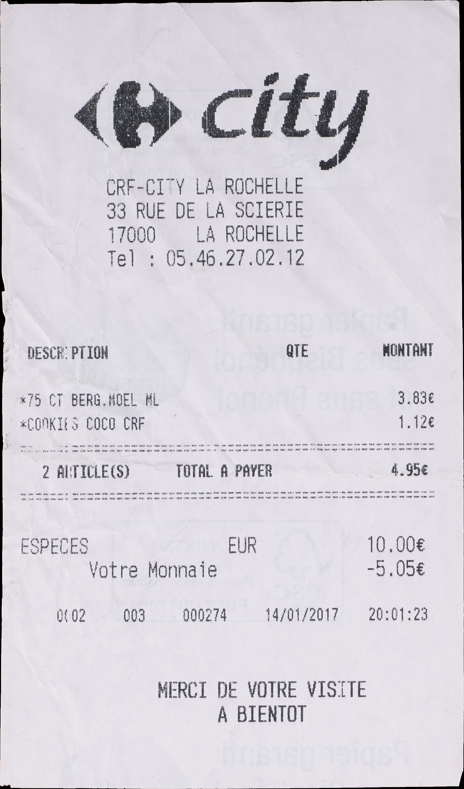
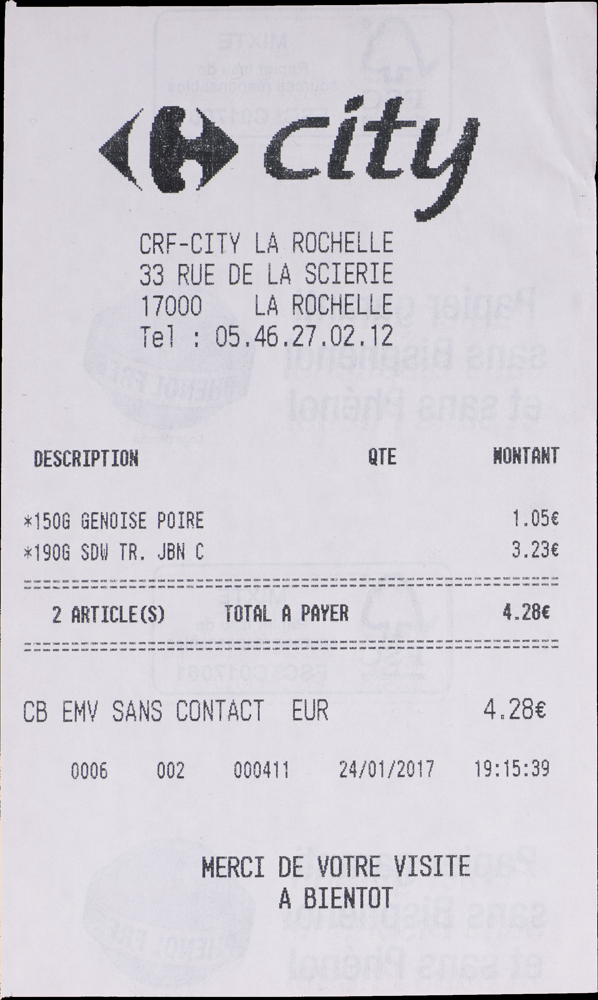
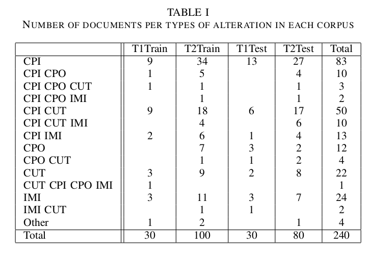

Image Tampering can be defined as manipulating an digital image. Document Image Tampering detection is the task to identify if the document was tampered or not. There are 2 ways to verify whether document is tampered, using text or using image. We are working on images. Convolution networks provide good results on detection of tampering but these network require large amount of training data. Mainly results were found using steganalysis features and using noiseprint
Below are some images from the dataset
Tampered images
Non tampered images
 Distribuition of types of tampering
Adam Optimizer is used with weight decay at 0.0005
Adam Optimizer is used with weight decay at 0.0005
Adam Optimizer is used with weight decay at 0.0005
DCT
Using the text from document
1. Implement Noiseprint -> Help with localization of copy-move forgery where the tampered region was captured from a different camera(CPO)
2. Better results using Steganalysis features
3. Augment data using Yashas' approach or dataset generation
4. Localization techniques: Noiseprint, Yashas method, CMFD